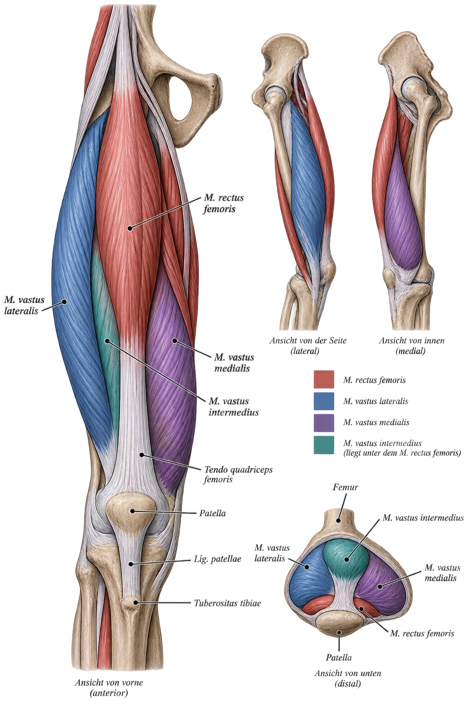

Die vier Köpfe
zweigelenkig
M. rectus femoris
Streckt das Knie und unterstützt zusätzlich die Beugung im Hüftgelenk.
Übungen ansehen → lateralM. vastus lateralis
Unterstützt die Kniestreckung und bildet den äußeren Anteil des Quadrizeps.
Übungen ansehen → medialM. vastus medialis
Streckt das Knie und unterstützt die mediale Führung und Stabilisierung der Patella.
Übungen ansehen → tiefM. vastus intermedius
Liegt unter dem M. rectus femoris und trägt zur Streckung im Kniegelenk bei.
Übungen ansehen →